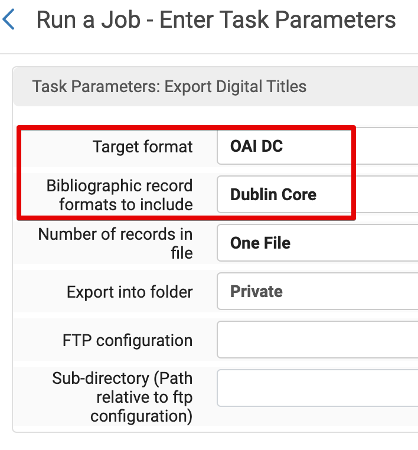
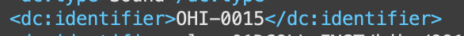
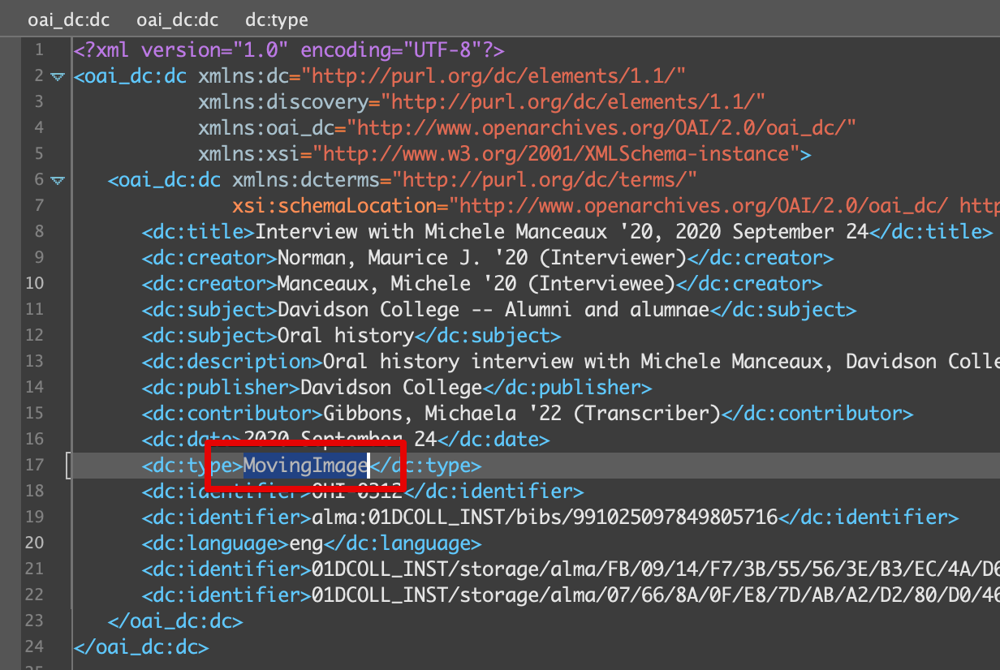

Davidson College is exporting metadata records from Alma to ingest content into Preservica for preservation. We are starting with some Oral Histories and Interviews, including video, audio, and text files. Alma exports the .xml file with a <record> tag and Preservica needs the <oai_dc:dc> tag. The Alma DC record also comes with a <discovery:resourceType> tag that isn't allowed in Preservica.
Bulk export from Alma and splitting into multiple XML files after XSL transformation is the preferred method as it speeds the process up quite a bit.
Click on Analytics then Design Analytics to open the Oracle Dashbaord.
Click on Catalog then navigate to the Alma Digital shared folder and click edit of the analysis titled "Digital Title Set Creation Template"
It will by default show you the results, so click the Critera tab at the top-left. Then click the gear next to the "Collection Name" column to apply a filter.
Click on the magnifying glass icon to open up the available filter for "Collection Name."
Search for the Collection Name title and either double click it or click it once before clicking the > to populate the "Selected" box with the collection you want to filter for a set. Finally, click OK twice.

The Filters panel will show the collection name. Once you confirm the collection name, click Results to make sure the PIDs are displaying.
You'll then see a table with PIDs and Collection Names. Now you will Save As a new analysis to keep the template empty of filters. Save it as the Collection Name Set, e.g., Irving Bienstock project Set. This may go into a sub folder of sets?

Now that the collection has been saved as an analysis, you can create a set "From Analytics." Back in Alma, select Admin then Manage Sets
Click Add Set then Itemized

Give the set a name (probably the name of the collection), select Digital titles from the "Set content type" dropdown, and select From Analytics. Alma will take a bit to process all the directories in analytics. Now's a good time for a stretch üôÜ‚Äç‚ôÄÔ∏è or coffee ‚òï (seriously).
The folder will default to "Recent reports" and the analysis you just saved doesn't always show up there. Select the Davidson College 01DCOLL_INST/Reports/Alma Digital folder directory and then the name of the analysis in the field below the folder. Click Save. You'll receive an email when the set has be created (usually instantly)
It will now show up as a set under My Sets. üéâ
Click Admin then Run a Job
Search "export digital" to narrow down the 100+ jobs. Select Export Digital Titles and click Next.
Select the Set you want to perform the job on and click Next.
Change the following parameters:
OAI DCDublin CoreEverything else can be left as is. Click Next.

No need to give the job a name, so click Submit. You will receive an email once the job is complete (quick depending on size of collection/set). Click the History tab and then the report link.
Click the "Link to Exported records" link.
Click the .xml bibliographic link to download the file. It should download to wherever your downloads directory is. Now you can run the XSLT to copy each record from the .xml file into individual .xml files for ingest to Preservica.
.xml file and the Split_Single_to_Multiple_XML_Files.xsl file in Oxygen XML Editor..xml file and .xsl file).The files will now appear in the Output directory you selected.
Since the .xslt created single .xml files, you now need to rename these to match the media files exactly, with the additional .metadata, e.g., OHI-0357_V_ShowersCharlesO_20220310.mp4.metadata This is what Preservica requires.
I recommend going back to the XML Editor perspective for a fuller screen of the long .xml file.
The new list of files e.g., file1-40.xml are in the same order as they appear in the main .xml file exported from Alma. Scroll through that file to target the newly transformed individual files and match it with the fileX.xml. The easiest way is to find the OHI in the <dc:identifier> field.

Copy the file name from one of the media files that match the OHI ID
Rename fileX.xml and paste the copied text and edit the .xml with .metadata
Open the newly named .metadata file and make sure the dc:type matches the media it's for. This is the only dc field that will need to be updated. Typical names are:
MovingImageSoundText
Once the dc:type matches the media file type, Save As
Rename the file (typical examples above). Oxygen Editor will add .xml after the .metadata so make sure to delete .xml as this speeds up the Ingest process in Preservica.
If there's one (1) Audio, one (1) Video, and one (1) Transcript media, there should be three (3) metadata files, totalling six (6) files.
Continue through the list of transformed .xml files from the .xsl using this method.
The DC XML file is obtained through the "Download BIB" Cloud Apps in Alma.
The following xslt transforms the xml into the right format for ingest into Preservica:
<xsl:stylesheet version="2.0"
xsi:schemaLocation="http://www.openarchives.org/OAI/2.0/oai_dc/ oai_dc.xsd"
xmlns:xsl="http://www.w3.org/1999/XSL/Transform"
xmlns:dc="http://purl.org/dc/elements/1.1/"
xmlns:oai_dc="http://www.openarchives.org/OAI/2.0/oai_dc/"
xmlns:xsi="http://www.w3.org/2001/XMLSchema-instance"
xmlns:discovery="http://purl.org/dc/elements/1.1/">
<xsl:output method="xml" version="1.0" encoding="UTF-8" indent="yes"/>
<xsl:strip-space elements="*"/>
<xsl:template match="node()|@*">
<xsl:copy>
<xsl:apply-templates select="node()|@*"/>
</xsl:copy>
</xsl:template>
<xsl:template match="discovery:resourceType">
<xsl:apply-templates/>
</xsl:template>
<xsl:template match="record">
<oai_dc:dc>
<xsl:apply-templates/>
</oai_dc:dc>
</xsl:template>
</xsl:stylesheet>